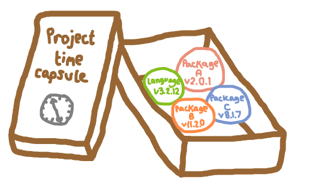

Dependency management
Choose your language:
- Heather et al. 2025: List dependencies and versions.
- NHS Levels of RAP (ü•à): Repository includes dependency information.
Dependency management is about keeping track of the environment used for your project. This includes the version of your programming languages, any packages used, and their versions.
It acts like a time capsule, allowing you to return to a project later and run it with the exact same packages and versions, reproducing the results generated previously.

Dependency management enables you to isolate environments for different projects. Each project can have it’s own set of dependencies, preventing conflicts and making it easy to switch between projects.
It is also important for collaboration, so that everyone working on the project is using the same environment.

Python tools for dependency management
There are lots of tools available for managing dependencies in isolated environments in python. A few of the most popular tools include venv, conda, and poetry.
In this book, we will use conda, as it allows us to specify a python version, so each environment we create can have a different specific version of python. This is not possible with venv and poetry, which just manage the package dependencies, and will just use the system python.
Mamba is a drop-in replacement for conda that is often preferred as it is:
- Faster than conda.
- Better at dealing with dependency conflicts, providing more helpful messages in cases where environments fail to builds due to clashing requirements of different packages.
To use mamba, simply replace conda in all the commands below with mamba.
Installing conda (or mamba)
Refer to the conda or mamba documentation for the latest instructions on installing these for your operating system (windows, mac or linux).
Setting up our conda environment
1. Create an environment file. In the project root, we create üìÑenvironment.yaml.
touch environment.yamlWithin this file, we add three sections:
- Name. The environment name.
- Channels. Where to find packages (e.g.
conda-forge). - Dependencies. The packages you need.
When first creating our environment, we just list the dependencies we know we need at this point - we can always add more later! At the start of a project, you might only know one: python.
As an example, we will add simpy and python.
name: des-example
channels:
- conda-forge
dependencies:
- python
- simpy2. Build and activate the environment. In the command line, run the following to create your environment:
conda env create --file environment.yamlYou can then activate it (replacing des-example with your environment name):
conda activate des-exampleTo confirm your environment contains the expected packages, run:
conda listThis will output a list of packages, versions, builds and channels. For example, it may look similar to:
(des-example) amy@xps:~/Documents/hospital-des$ conda list
# packages in environment at /home/amy/mambaforge/envs/des-example:
#
# Name Version Build Channel
_libgcc_mutex 0.1 conda_forge conda-forge
_openmp_mutex 4.5 2_gnu conda-forge
bzip2 1.0.8 h4bc722e_7 conda-forge
ca-certificates 2025.1.31 hbd8a1cb_1 conda-forge
ld_impl_linux-64 2.43 h712a8e2_4 conda-forge
libexpat 2.7.0 h5888daf_0 conda-forge
libffi 3.4.6 h2dba641_1 conda-forge
libgcc 14.2.0 h767d61c_2 conda-forge
libgcc-ng 14.2.0 h69a702a_2 conda-forge
libgomp 14.2.0 h767d61c_2 conda-forge
liblzma 5.8.1 hb9d3cd8_0 conda-forge
libmpdec 4.0.0 h4bc722e_0 conda-forge
libsqlite 3.49.1 hee588c1_2 conda-forge
libuuid 2.38.1 h0b41bf4_0 conda-forge
libzlib 1.3.1 hb9d3cd8_2 conda-forge
ncurses 6.5 h2d0b736_3 conda-forge
openssl 3.5.0 h7b32b05_0 conda-forge
pip 25.0.1 pyh145f28c_0 conda-forge
python 3.13.3 hf636f53_101_cp313 conda-forge
python_abi 3.13 7_cp313 conda-forge
readline 8.2 h8c095d6_2 conda-forge
simpy 4.1.1 pyhd8ed1ab_1 conda-forge
tk 8.6.13 noxft_h4845f30_101 conda-forge
tzdata 2025b h78e105d_0 conda-forge3. Specify versions. For reproducibility, it’s best to specify the exact package versions in you environment.yaml. If you’re starting from scratch, you may not know which versions you need, so you can leave them out initially, as we did in step 1.
However, now that we have built our environment (which used the latest versions as none were specified), it is important to then record your versions in the üìÑenvironment.yaml. These are the versions you saw when running conda list. For example:
name: des-example
channels:
- conda-forge
dependencies:
- python=3.13.3
- simpy=4.1.14. Setting up the full environment for this book. When working on a project from scratch, you will often build up your environment organically and iteratively as you find more packages you want to use. However, to follow along with this book and ensure everything works as expected, you can use the full environment provided below. Copy this into your üìÑenvironment.yaml (feel free to alter the name!):
name: des-example
channels:
- conda-forge
dependencies:
- ipykernel=6.29.5
- jinja2=3.1.5
- joblib=1.4.2
- nbconvert=7.16.6
- nbformat=5.10.4
- nbqa=1.9.0
- numpy=2.2.2
- pandas=2.2.3
- pip=25.0
- plotly_express=0.4.1
- pylint=3.3.4
- pytest=8.3.4
- pytest-xdist=3.6.1
- python=3.13.1
- rich=13.9.4
- simpy=4.1.1
- pip:
- kaleido==0.2.1
- sim-tools==0.8.0Then update your environment to include these packages (after running conda activate des-example) with:
conda env update --file environment.yaml --pruneFurther information
- “An unbiased evaluation of environment management and packaging tools” from Anna-Lena Popkes 2024
- “Python dependency management is a dumpster fire” from Niels Cautaerts 2024
R tools for dependency management
⚠️ EVERYTHING BELOW IS WORK IN PROGRESS ⚠️
The most popular tool for managing dependencies in R is renv. This replaced and improved upon the previous tool, Packrat.
Renv will create isolated environments with the specific packages and their versions for a project. However, it won’t manage the version of R used - the version of R used is simply whatever is installed on your system.
Setting up renv from scratch
1. Initialise renv. Run the command below to get started with renv.
renv::init()This will add three new files/folders to the project:
renv/library/: stores packages used in project.renv.lock: record of packages used, so they can be re-installed on a new machine..Rprofile: ensures that renv is activated when open project.
2. Create a DESCRIPTION file. While not required, it is good practice to create a DESCRIPTION file. This file is standard for R packages (Structuring our model as a package), but is also helpful for regular projects using renv.
It lists the main dependencies in a clear, human-readable way, and can specify versions. This makes it easier to see what packages are required, unlike the verbose renv.lock file, which will list every package (the main packages plus all of their dependencies).
As an example, create the file in the project root:
touch DESCRIPTIONThen copy in:
Package: simulation
Type: Package
Title: Simulation
Version: 0.1.0
Authors@R: c(
person(
"Amy", "Heather",
email = "a.heather2@exeter.ac.uk",
role = c("aut", "cre")
)
)
URL: https://github.com/pythonhealthdatascience/rap_template_r_des
Description: Template reproducible analytical pipeline (RAP) for simple R
discrete-event simulation (DES) model.
License: MIT + file LICENSE
Encoding: UTF-8
LazyData: true
RoxygenNote: 7.3.2
Imports:
simmer,
magrittr,
dplyr,
purrr,
rlang,
tidyr,
tidyselect,
future,
future.apply,
ggplot2,
tibble,
gridExtra,
R6
Suggests:
testthat (>= 3.0.0),
patrick,
lintr,
devtools,
xtable,
data.table,
mockery
Config/testthat/edition: 3These are all dependencies we know we will need for this book. But if you were starting from scratch, would just add what need as go along, and iteratively expand it.
3. Install packages from DESCRIPTION. The command below will install the packages (and their dependencies) into your project library. It will typically install the latest available versions
renv::install()4. Save environment to lockfile. Having installed these packages, we then save the current state of the project library to a lock file. This updates renv.lock, which is a record of the exact packages and versions used in the project.
renv::snapshot()Restoring a previous renv from lockfile
1. Obtain lockfile. If you are attempting to restore an environment from a lockfile, you need to obtain that renv.lock. This provides details on packages and versions to be restored (but not R version). As an example: TBC.
2. Initialise renv. As before, initialise renv for the project.
renv::init()3. Restore the environment. Restore the provided renv based on the lock file. This will install the exact packages listed in the lockfile.
renv::restore()System dependencies
Some R packages required external system libraries. The exact requirements will depend on which packages you use, what operating system you have, and whether you have used R before.
For example, working on Ubuntu, we found that we had to install the following system dependencies for igraph:
sudo apt install build-essential gfortran
sudo apt install libglpk-dev libxml2-dev